Overview
Just as debugging should be thought of as a vital part of every development cycle, on-device debugging should be part of any effective testing regimen. Although much can be accomplished using emulators and an IDE, applications often behave differently when running on hardware, and features such as Barcode scanning are impossible to test without the use of physical hardware to perform the scan and acquire the data.
This guide includes instructions for enabling debugging on an Android device and describes three methods of debugging Enterprise Browser apps while they're running on a device:
Chrome's Web Inspector - works with Android KitKat and higher, is easy to set up, and offers screenshots and other nice extras.
Weinre - is a node.js application that can effectively test most apps running on Android Jelly Bean as well as Windows Mobile/CE devices.
Remote Debug Inspector - works with Windows Mobile/CE devices that use the Zebra Webkit.
Prerequisites
Requirements of the development host vary based on the target device and its OS platform. General requirement guidelines are listed below. Platform-specific requirements, if any, will be listed in the section that describes the individual debugging tool and/or method.
- Mac OS X or Windows development host
- Android Debug Bridge (ADB) or MS Mobile Device Center (or ActiveSync)
- Chrome 32 or later (Chrome Canary recommended)
- A Zebra target device (Android or Windows Mobile/CE)
- A USB cable for connecting the target to the dev. host
- USB debugging enabled on target
- A WebView-based app configured for debugging
Debugging with Chrome
If you're building an Android app and have a device with Android KitKat 4.4 or higher, Google Remote Debugging is an alternative to Weinre that's a bit easier to install and offers some great visuals for testing, debugging and fine-tuning your app while it's running on the device.
Google Remote Debugging works with native Android apps that use WebView as well as purely browser-based apps. It includes live screencasting from the remote unit to the development host, and supports port forwarding and virtual host mapping in case your device needs to access a development server.
Requirements
- Mac OS X or Windows development host with ADB installed
- Chrome 32 or later installed (Chrome Canary recommended)
- A USB cable for connecting the target to the dev. host
- A target device running Android 4.4 (KitKat) or later
- USB debugging enabled on target
- An app made with EB 1.5 or higher
- The app's <DebugModeEnable> tag contains a value of "1"
1. Enable Device Debugging
Before continuing, check that the <DebugModeEnable> tag in the app's Config.xml contains a value of "1" (see the Config.xml Reference for details). Edit that file (if necessary) and return here, or continue now and edit the file later.
The target device must have USB debugging enabled. This latter feature is found in Settings >> Developer Options panel, which is hidden by default. Here's how to un-hide Developer options (if necessary) and enable USB debugging:
- Go to Settings >> About Phone
- Go to the "Build Number box" (by scrolling all the way to the bottom)
- Tap the Build Number box seven times
- Return to Settings and tap Developer Options
- Place a check in the Enable USB Debugging box
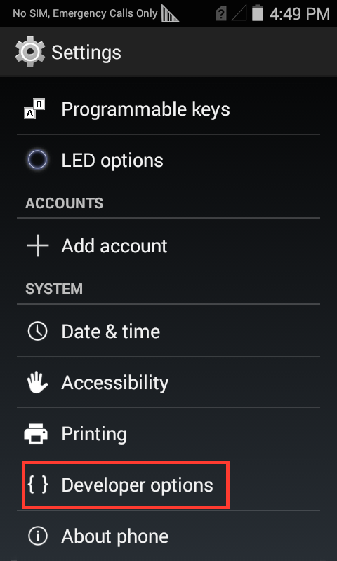
Click on any image to enlarge.
2. Discover Device (in Desktop Chrome)
If not already done, connect the device to an available USB port on the development host and enable device detection in Chrome:
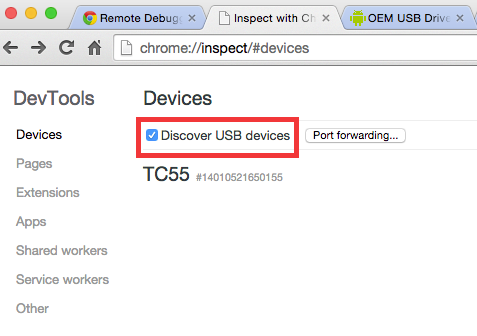
Open a browser window and enter 'chrome://inspect' in the address bar. You should see a screen similar the one above.
Check the "Discover USB Devices" checkbox. The mobile device appears along with an alert on the device. (If no devices are visible, please refer to the Connections section of the Enterprise Browser Setup Guide).
Tap OK on the device to complete the connection
Linux- and Mac-based developers can skip to the next step. Developers on Windows must install a USB driver to make a USB-attached Android device visible. Please refer to the Connections section of the Enterprise Browser Setup Guide) for that procedure.
At this point you should be ready to begin debugging. Once your app is deployed and running on the device, the chrome://inspect page should look something like the one shown below, with your device and a link to its debug-enabled WebViews. To begin debugging, click an inspect link.
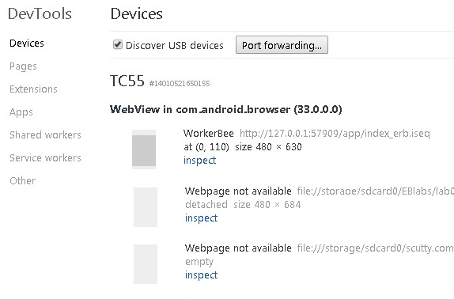
Google Dev Tool Tutorial
To learn more about debugging with Chrome, please refer to the Google Chrome Dev Tools Tutorial.
Debugging with Weinre
Weinre is a must-have developer tool for testing and debugging JavaScript Enterprise Browser application. Short for Web Inspector Remote, Weinre provides a live portal into Enterprise Browser APIs with its JavaScript Console tab, a much faster method than sifting through logs.
This section of the guide follows a 14-minute Weinre webinar and uses the Barcode Example app from that lesson for all of the examples in this guide. You're welcome to download the app and follow along, use your own app, or simply play around with the APIs and code snippets.
Install Weinre
Note: Admin/sudo privileges are required to install Weinre.
Weinre is a Node.js application and is delivered via a Node Package installed with the npm command.
1. Download node.js from the project's /release folder.
2. On Windows, install Weinre using the following command:
$ npm -g install weinre
Mac users might need to include the 'sudo' prefix:
$ sudo npm -g install weinre
For more information about installing and configuring Weinre, please refer to the Weinre installation site.
Start Weinre
IMPORTANT: The target device must be on the same Wi-Fi network as the development host. When launched, Weinre must be bound to that network using the boundhost parameter (see below). Launching without this parameter will bind Weinre to the localhost, making it inaccessible from the device.
3. Launch Weinre from the command line using the --boundhost option:
$ weinre --boundhost <development host IP address>
Weinre will respond with a message similar to the one below--an address and port that will be used to communicate with the device:
2013-10-31T00:24:07.549Z weinre: starting server at http://192.168.1.128:8080
4. Using a browser, open the address and port provided by Weinre.
The page should look something like this:
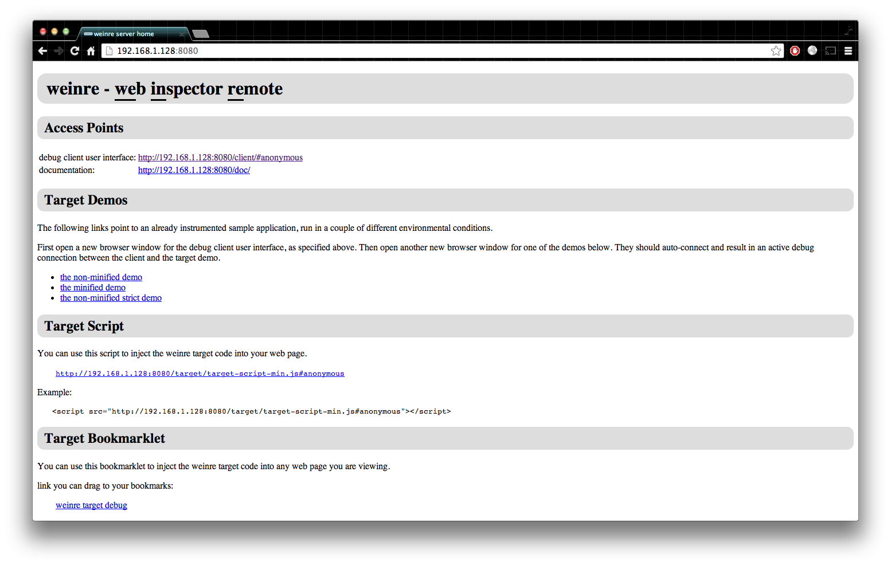
Click on any image to enlarge.
Enable Weinre In the App
If all has gone well so far, the browser is displaying the Weinre Inspector Remote console. In the section labeled ‘Target Script,’ there's a string that contains a URL with the dev host's local IP address and port number, plus the name and path of the script file that Weinre needs to communicate with the target device.
Lower in the Target Script section is an example of how to embed the Target Script string between script tags:
Example Script String:
<script src="http://<your local ip address>:<your port>/target/target-script-min.js#anonymous"></script>
5. Copy and paste the example script string (above) into the barcode_enumerate.html file (or your corresponding app file).
6. Copy the URL string referenced earlier and use it to replace the example URL. Be sure to leave the quote marks on either side of the URL.
The line in the HTML should look like this:
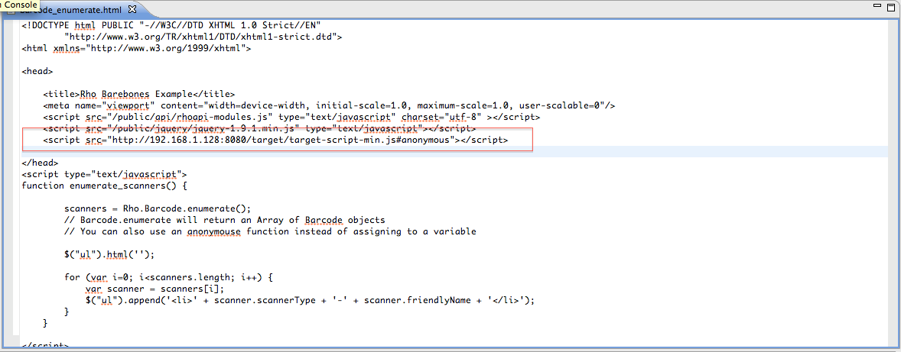
7. Start the Weinre debug UI by clicking the link in the Access Points section of the Weinre browser page:
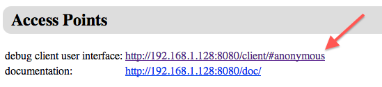
Debug Client UI
The image below shows the ‘Remote’ tab of Weinre’s Debug Client UI. The ‘Targets’ and ‘Clients’ sections contain one device each, and the green text indicates that both devices are communicating.
The inset image is a screenshot from the target Android device that’s being displayed by an app called Droid@Screen . This useful screencasting tool uses USB and ADB to stream screen shots to the development host.
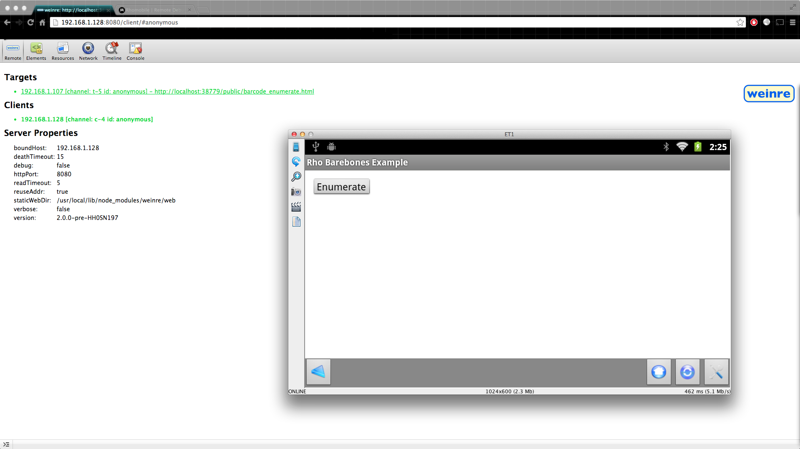
At this point, the app can be inspected as with the web inspector of Chrome or any other tool. The Elements tab shown below demonstrates two-way communication between the device and the development host. Clicking on an element in the HTML will cause that element to be highlighted on the device’s UI.
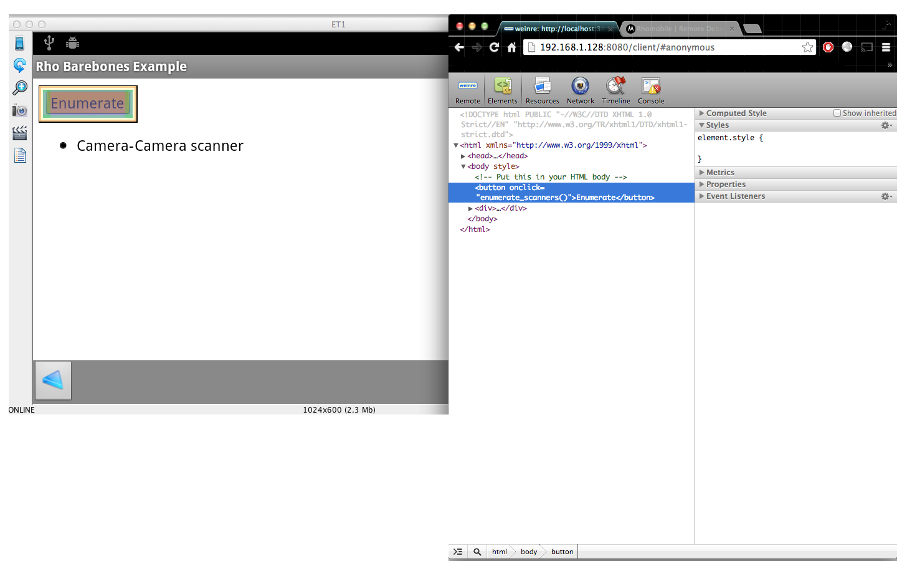
The Elements tab can be used for on-the-fly changes to CSS styling, API and method calls and any and all app UI settings. In the example below, the button text was changed from ‘Enumerate’ to ‘Changed!’ simply by editing the test in the Elements tab.
Button text "Enumerate"
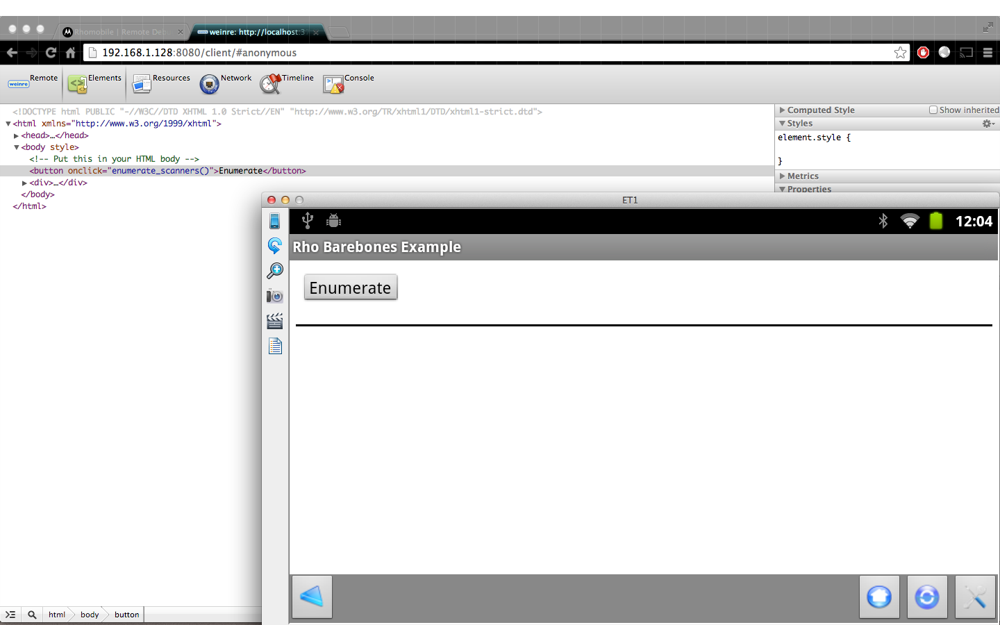
Button text "Changed!"
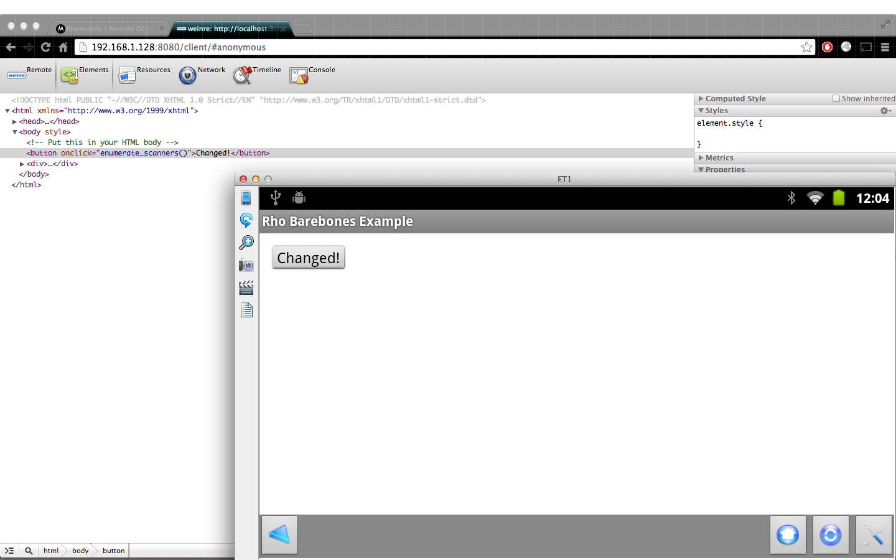
Console and Issuing API Calls
One of the most versatile components of Weinre is its Console. Not only does it offer classic capabilities such as device visibility and monitoring during operation, but the Weinre Console also can access all of a device’s hardware features, issue commands and report how the device reacts.
The example below shows results from an attempt to use the JavaScript API to check the target platform, use the camera to scan a barcode, and issue a command to the ScreenOrientation API (which returned an error).
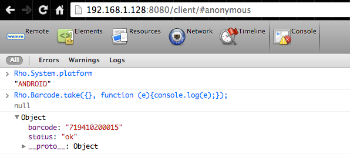
In the example, the Console is used to verify that JavaScript APIs are functioning properly. A return of the correct system platform ‘Android’ proves that the System API is working. A return of the correct scanned barcode value likewise proves that the Barcode module is working properly.
Here’s another important benefit of the Weinre console.
Notice that when the barcode callback handler function is executed, we are using the form console.log(e), where e is the callback return object. This allows us to inspect the object right in the console. It also simplifies validation because we see that it contains a barcode property and a status property, exactly as described in the Barcode.take( ) method description. Alternative means, such as adding code for outputting to a log and then searching and retrieving the information from the device, can be time-consuming and error-prone.
Other Tabs in Debugger UI
Several other tabs in the debugging UI can be quite useful.
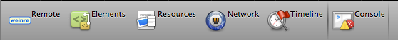
Network Tab
The Network tab measures and displays the time required for HTTP requests made by an application. Clicking on any of the resources in the left-hand pane will visually represent the delay as its headers and content are loaded and AJAX and other calls are made to remote servers. Data displayed when hovering over "Latency" and "Timeline" columns, andcan be used to help optimize load-time performance. Remember that EB application can have a 'server' running on the device as well as on the web. It is important to inspect the processing of JavaScript or CSS files and reduce lag wherever possible.
TimeLine Tab
The Timeline tool measures and displays the rendering time of each element of the user interface, presenting a visual display similar to that of the Network tab. The Timeline tab is useful for finding bottlenecks in front-end UI or DOM performance.
More information about Timeline can be found starting at 25:10 of Zebra’s Front-End UI Optimization Webinar. This one-hour video contains useful information about detecting re-flows and other common problems that can bring mobile apps to a crawl.
Resources Tab
The Resources tab allows displays the resources being used by the current Webview page. Resources can include outside assets being called into the app such as images, JavaScript, style sheets and cookies. Inspecting the resources can be useful if for ensuring that a particular resource has been loaded. This tab also can provide insight into other HTML5 features such as WebSQL and localStorage, if present.
Using Remote Debug Inspector
The Remote Debug Inspector tool is for debugging apps running on Zebra Windows Mobile/CE devices that use Zebra Webkit. Remote Debug Inspector installs on the device and requires a new tag in the Config.XML of the target app to make it work with desktop Chrome.
Prerequisites
- A Mac (with ADB) or Windows 7 or later PC (with Mobile Device Center)
- Enterprise Browser installed on the development host
- Chrome browser installed (Mac or Windows)
- A Zebra device running Windows Mobile/CE
- An EB app installed with Webkit (not the IE Engine; see below)
- A connection to the device for copying files (Bluetooth, USB or Wi-Fi)
- The development host and device on the same subnet (over which to debug)
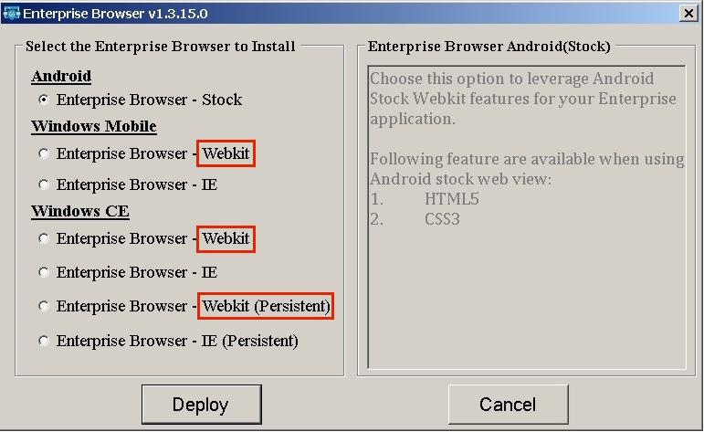
Enterprise Browser device installer showing Webkit deployment options.
Click on any image to enlarge.
Install
1. Download Remote Debug Inspector tool.
2. Copy the downloaded "inspector.CAB" file to the device.
3. Execute the file, which will install into a folder called /inspector on the device.
4. Add to the Config.XML file (of the target app) the following tags:
...
</HTMLStyles>
<RemoteDebug>
<ResourceFiles value="file:///inspector/"/>
<ServerPort value="7000"/>
</RemoteDebug>
<SIP>
...
Notice that the <RemoteDebug> section is inserted after <HTMLStyles> and before <SIP>.
Also note that we're using the default values for ResourceFiles and ServerPort. If these are changed, be sure to make the corresponding changes in the next steps.
5. Note the IP address of the target device (Wi-Fi Settings >> Wi-Fi Driver Settings). It must be on the same subnet as the development host.
6. Launch the Enterprise Browser app to be tested.
7. Enter the following URL in Chrome's URL bar:
...
http://<device ip address>:7000
After a few moments, the browser should display a page similar to the image below:
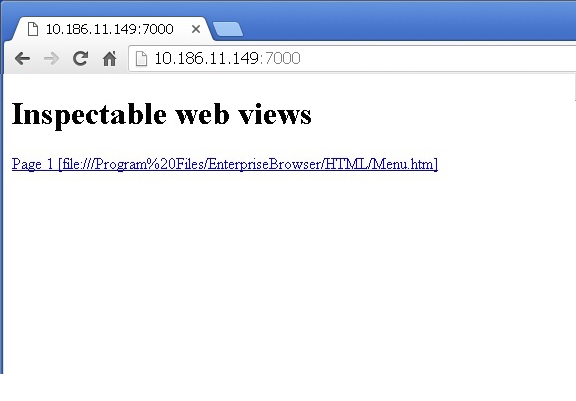
8. Click on a link to inspect it in a panel similar to the image below:
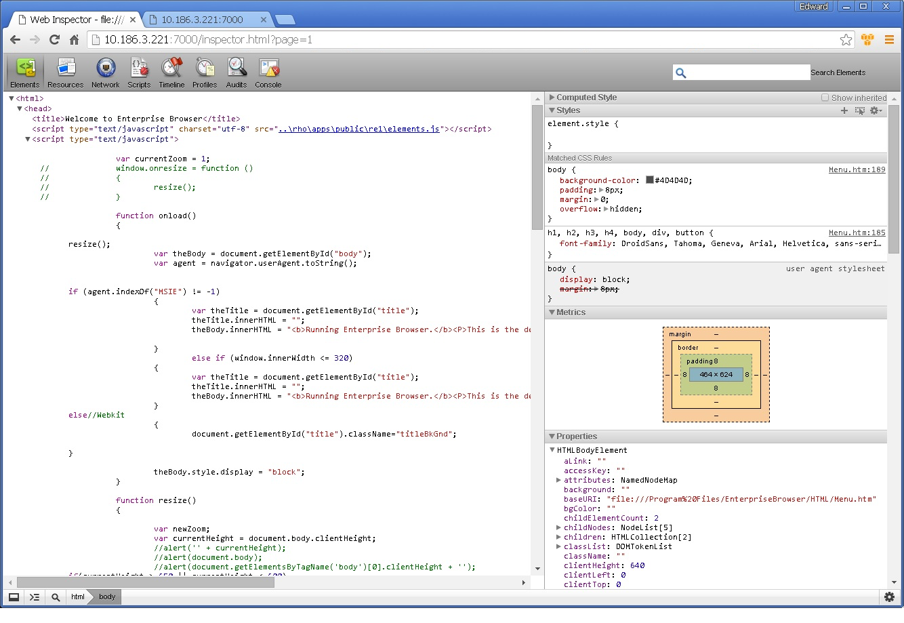
This panel works in much the same manner as those of Weinre and Chrome Web Inspector (click on any image to enlarge).